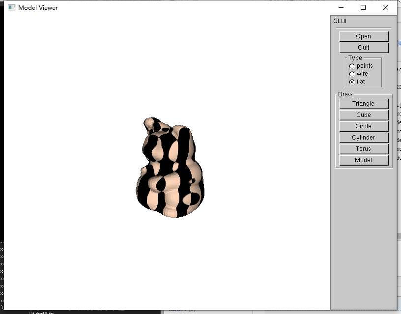
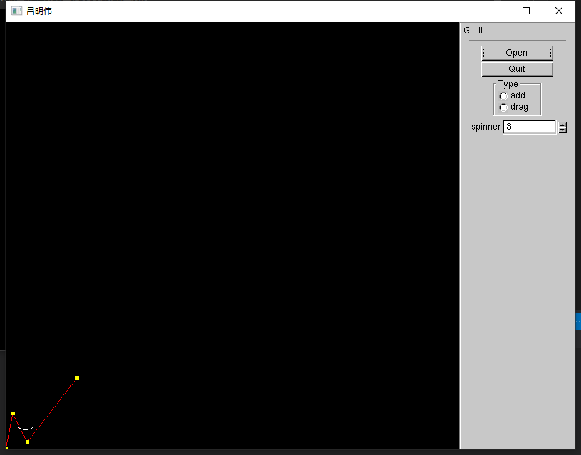
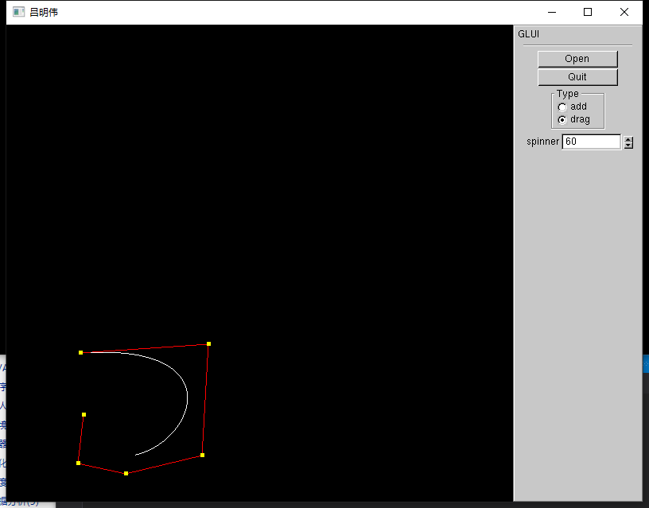

在上篇文章中，介绍了如何加载绘制模型以及鼠标交互的实现，并且遗留了个问题，就是没有模型表面没有纹理，看起来很丑。这篇文章将介绍如何贴纹理，以及曲线的绘制。
既然是贴图，那首先我们得要有合适的纹理图片，openGL中支持的图片为bmp格式。在这里我还用到了个额外的库glaux，但当时在找这个库的时候花了不少时间，这里为了方便大家就把链接放出来。配置方式与之前glut与glui的配置方式相同。
然后是固定的加载图片的代码
GLuint texture[1]; // 存储一个纹理---数组
AUX_RGBImageRec *LoadBMP(CHAR *Filename)
{
FILE *File = NULL; // 文件句柄
if (!Filename) // 确保文件名已提供
{
return NULL; // 如果没提供，返回 NULL
}
File = fopen(Filename, "r"); // 尝试打开文件
if (File) // 判断文件存在与否
{
fclose(File); // 关闭句柄
return auxDIBImageLoadA(Filename); // 载入位图并返回指针
}
return NULL; // 如果载入失败，返回 NULL
}加载完图片后，我们还需要把图片转换成纹理
int LoadGLTextures(GLuint *texture, char *bmp_file_name, int texture_id)
{
int Status = FALSE; // 状态指示器
// 创建纹理的存储空间
AUX_RGBImageRec *TextureImage[1];
memset(TextureImage, 0, sizeof(void *) * 1); // 将指针设为 NULL
// 载入位图，检查有无错误，如果位图没找到则退出
if (TextureImage[0] = LoadBMP(bmp_file_name))
{
Status = TRUE; // 将 Status 设为 TRUE
//生成(generate)纹理
glGenTextures(texture_id, texture); //&texture[0]);
//绑定2D纹理对象
glBindTexture(GL_TEXTURE_2D, *texture); //texture[0]);
//关联图像数据与纹理对象
glTexImage2D(GL_TEXTURE_2D, 0, 3, TextureImage[0]->sizeX, TextureImage[0]->sizeY, 0, GL_RGB, GL_UNSIGNED_BYTE, TextureImage[0]->data);
//图形绘制时所使用的滤波器参数
glTexParameteri(GL_TEXTURE_2D, GL_TEXTURE_MIN_FILTER, GL_LINEAR); // 线形滤波
glTexParameteri(GL_TEXTURE_2D, GL_TEXTURE_MAG_FILTER, GL_LINEAR); // 线形滤波
}
//释放图像的内存，因为已经生成纹理了，没用了
if (TextureImage[0]) // 纹理是否存在
{
if (TextureImage[0]->data) // 纹理图像是否存在
{
free(TextureImage[0]->data); // 释放纹理图像占用的内存
}
free(TextureImage[0]); // 释放图像结构
}
else
printf("纹理不存在");
return Status; // 返回 Status
}使用方式如下
LoadGLTextures(&texture[0], "4.bmp", 1); //可添加到初始化代码中这样，我们就把纹理载入到了texture数组中去了。
对于纹理贴图，有这么几个函数是需要知道的：
下面就拿之前的模型来做演示
void DrawModel(CObj &model)
{//TODO: 绘制模型
for (int i = 0; i < model.m_faces.size(); i++)
{
glBindTexture(GL_TEXTURE_2D, texture[0]);
glBegin(GL_TRIANGLES);
glNormal3f(model.m_faces[i].normal.fX, model.m_faces[i].normal.fY, model.m_faces[i].normal.fZ);
glTexCoord2f(model.m_pts[model.m_faces[i].pts[0] - 1].normal.fX, model.m_pts[model.m_faces[i].pts[0] - 1].normal.fY);
glVertex3f(model.m_pts[model.m_faces[i].pts[0] - 1].normal.fX, model.m_pts[model.m_faces[i].pts[0] - 1].normal.fY, model.m_pts[model.m_faces[i].pts[0] - 1].normal.fZ);
glTexCoord2f(model.m_pts[model.m_faces[i].pts[1] - 1].normal.fX, model.m_pts[model.m_faces[i].pts[1] - 1].normal.fY);
glVertex3f(model.m_pts[model.m_faces[i].pts[1] - 1].normal.fX, model.m_pts[model.m_faces[i].pts[1] - 1].normal.fY, model.m_pts[model.m_faces[i].pts[1] - 1].normal.fZ);
glTexCoord2f(model.m_pts[model.m_faces[i].pts[2] - 1].normal.fX, model.m_pts[model.m_faces[i].pts[2] - 1].normal.fY);
glVertex3f(model.m_pts[model.m_faces[i].pts[2] - 1].normal.fX, model.m_pts[model.m_faces[i].pts[2] - 1].normal.fY, model.m_pts[model.m_faces[i].pts[2] - 1].normal.fZ);
glEnd();
}
}
// 初始化代码中加入
glEnable(GL_TEXTURE_2D);效果如下

好吧，它还是很丑 orz。。。。
从前面的学习中，或许已经发现，openGL并不能直接绘制曲线或曲面，那我们要如何绘制呢？对于曲线，一个很简单的想法就是用直线逼近，但是如何实现呢？如果我们知道这条曲线的参数方程，或许还是比较容易的。
首先先理解一些基本概念：
引入曲线表达式$ p(u) = ∑{k=0}^{n}P_kB{k,d}(u) , u_{min} ≤ u ≤ u_{max}, 2 ≤ d ≤ n + 1$
B样条曲线的混合函数由cox-deBoor递归公式定义为
\[
B_{k,1}=\begin{cases}
1,\quad &u_k \leq u \leq u_{k+1}\\
0,\quad &else
\end{cases} \\
B_{k,d}(u) = \frac{u-u_k}{u_{k+d-1}-u_k}B_{k,d-1}(u)+\frac{u_{k+d}-u}{u_{k+d}-u_{k+1}}B_{k+1,d-1}(u)
\]
这里有个动态过程帮助理解
代码实现
先给出基本框架
#ifndef COMMON
#define COMMON
#define VIEW_YES 0x00
#define VIEW_NO 0x01
#define CRTL_LOAD 0x00
#define CRTL_ADD 0x01
#define CRTL_DRAG 0x02
#define CRTL_DENSE 0x03
#define CRTL_WAIT 0x04
#define CRTL_CYLINDER 0x05
#define CRTL_CONE 0x06
#define CRTL_MODEL 0x07
#define CHANGE_DENSE 0x00
#define SHAPE_CUBE 0x01
#define SHAPE_CIRCLE 0x02
#define SHAPE_CYLINDER 0x03
#define SHAPE_TORUS 0x04
#define SHAPE_MODEL 0x05
#define TRANSFORM_ADD 0x51
#define TRANSFORM_DRAG 0x52
#define TRANSFORM_NONE 0x53
#define TRANSFORM_TRANSLATE 0x54
#endif // 实验二.cpp : 此文件包含 "main" 函数。程序执行将在此处开始并结束。
//
#include "pch.h"
#include"common.h"
#include<windows.h>
#include<string.h>
#include <stdlib.h>
#include <math.h>
#include <iostream>
#include <sstream>
#include <algorithm>
#include<gl/glui.h>
#include<gl/glut.h>
#include<vector>
int g_xform_mode = TRANSFORM_NONE;
int g_form_mode = TRANSFORM_NONE;
int g_view_type = VIEW_YES;
int g_control_type = CRTL_LOAD;
int g_dense = 0;
int g_main_window;
int g_index;
double g_windows_width, g_windows_height;
static int g_press_x; //鼠标按下时的x坐标
static int g_press_y; //鼠标按下时的y坐标
struct Point {
double x, y;
};
std::vector<Point> points; // 用于记录每个控制点的坐标
std::vector<float> vecs;
static int controlNum = 0; // 控制点的数量
static int pointNum = 0; // 节点数
static int degree = 0; // B样条曲线的次数
std::vector<Point> opts;
void createKnots() {
vecs.clear();
int nKnots = controlNum + degree;
for (int i = 0; i <= nKnots; i++) {
if (i < degree) {
vecs.push_back(0);
}
else if (i < nKnots - degree + 1) {
vecs.push_back(vecs[i - 1] + 1);
}
else {
vecs.push_back(vecs[i - 1]);
}
}
}
int find_point(int x, int y) {
}
void add_point(float x, float y) {
}
float Deboor(int k, int d, float t){
}
void bspToPoint() {
}
bool load_Point(const char* pcszFileName)
{
FILE* fpFile = fopen(pcszFileName, "r"); //以只读方式打开文件
if (fpFile == NULL)
{
return false;
}
points.clear();
opts.clear();
vecs.clear();
char strLine[1024];
Point point;
float vec;
fgets(strLine, 1024, fpFile);
std::istringstream sin(strLine);
sin >> degree;
fgets(strLine, 1024, fpFile);
std::istringstream sin1(strLine);
sin1 >> controlNum;
fgets(strLine, 1024, fpFile);
std::istringstream sin2(strLine);
while (sin2 >> vec)
{
vecs.push_back(vec);
}
while (!feof(fpFile))
{
fgets(strLine, 1024, fpFile);
std::istringstream sin3(strLine);
sin3 >> point.x >> point.y;
points.push_back(point);
}
points.pop_back();
fclose(fpFile);
g_dense = controlNum + degree;
bspToPoint();
return true;
}
void displayImage()
{
glClear(GL_COLOR_BUFFER_BIT);
glPointSize(1.0);
glColor3f(1.0, 0.0, 0.0);
//glEnable(GL_LINE_STIPPLE);
glLineStipple(1, 0xF0F0);
if (g_view_type == VIEW_YES) {
glBegin(GL_LINE_STRIP);
//glNormal3f(0.0f, 0.0f, 1.0f);
for (int i = 0; i < controlNum; i++) {
glVertex2f(points[i].x, points[i].y);
}
glEnd();
}
//glDisable(GL_LINE_STIPPLE);
glColor3f(1.0, 1.0, 1.0);
glBegin(GL_LINE_STRIP);
for (int i = 0; i < opts.size(); i++) {
glVertex2f(opts[i].x, opts[i].y);
}
glEnd();
glPointSize(5.0);
glColor3f(1.0, 1.0, 0.0);
glBegin(GL_POINTS);
//glNormal3f(0.0f, 0.0f, 1.0f);
for (int i = 0; i < controlNum; i++) {
glVertex2f(points[i].x, points[i].y);
}
glEnd();
glFlush();
}
void myGlutDisplay() //绘图函数， 操作系统在必要时刻就会对窗体进行重新绘制操作
{
glClear(GL_COLOR_BUFFER_BIT | GL_DEPTH_BUFFER_BIT); //清除颜色缓冲以及深度缓冲
displayImage();
glutSwapBuffers(); //双缓冲
}
void myGlutReshape(int x, int y) //当改变窗口大小时的回调函数
{
if (y == 0)
{
y = 1;
}
g_windows_width = x;
g_windows_height = y;
double xy_aspect = (float)x / (float)y;
GLUI_Master.auto_set_viewport(); //自动设置视口大小
glMatrixMode(GL_PROJECTION);//当前矩阵为投影矩阵
glLoadIdentity();
gluPerspective(60.0, xy_aspect, 0.01, 1000.0);//视景体
glutPostRedisplay(); //标记当前窗口需要重新绘制
}
void mouse(int button, int state, int x, int y)
{
g_press_x = x;
g_press_y = y;
if (button == GLUT_LEFT_BUTTON) {
if (g_xform_mode + 1 == CRTL_ADD) {
add_point(x, 600 - y);
createKnots();
bspToPoint();
displayImage();
glutPostRedisplay();
}
else if (g_xform_mode + 1 == CRTL_DRAG) {
g_index = find_point(g_press_x, 600 - g_press_y);
g_form_mode = TRANSFORM_DRAG;
}
}
else {
g_form_mode = TRANSFORM_NONE;
}
}
void init()
{
//glClearColor(1.0f, 1.0f, 1.0f, 1.0f);//用白色清屏
glMatrixMode(GL_MODELVIEW); //指定当前矩阵为模型视景矩阵
glLoadIdentity(); //将当前的用户坐标系的原点移到了屏幕中心：类似于一个复位操作
gluOrtho2D(0.0, 800, 0.0, 600);
}
void myGlutMotion(int x, int y) //处理当鼠标键摁下时,鼠标拖动的事件
{
if (g_form_mode == TRANSFORM_DRAG) //拖拽点
{
float x_offset = (x - g_press_x);
float y_offset = (y - g_press_y);
if (g_index != -1) {
points[g_index].x += x_offset;
points[g_index].y -= y_offset;
}
g_press_x = x;
g_press_y = y;
}
bspToPoint();
// force the redraw function
glutPostRedisplay();
}
void myGlutIdle(void) //空闲回调函数
{
if (glutGetWindow() != g_main_window)
glutSetWindow(g_main_window);
glutPostRedisplay();
}
void loadFile(void)
{//加载模型
//调用系统对话框
OPENFILENAME fname;
ZeroMemory(&fname, sizeof(fname));
char strfile[200] = "*.txt";
char szFilter[] = TEXT("TXT Files(*.TXT)\0");
fname.lStructSize = sizeof(OPENFILENAME);
fname.hwndOwner = NULL;
fname.hInstance = NULL;
fname.lpstrFilter = szFilter;
fname.lpstrCustomFilter = NULL;
fname.nFilterIndex = 0;
fname.nMaxCustFilter = 0;
fname.lpstrFile = strfile;
fname.nMaxFile = 200;
fname.lpstrFileTitle = NULL;
fname.nMaxFileTitle = 0;
fname.lpstrTitle = NULL;
fname.Flags = OFN_HIDEREADONLY | OFN_CREATEPROMPT;
fname.nFileOffset = 0;
fname.nFileExtension = 0;
fname.lpstrDefExt = 0;
fname.lCustData = NULL;
fname.lpfnHook = NULL;
fname.lpTemplateName = NULL;
fname.lpstrInitialDir = NULL;
HDC hDC = wglGetCurrentDC();
HGLRC hRC = wglGetCurrentContext();
GetOpenFileName(&fname);
wglMakeCurrent(hDC, hRC);
//printf("读取文件\n");
load_Point(fname.lpstrFile); //读入模型文件
}
void glui_control(int control) //处理控件的返回值
{
switch (control)
{
case CRTL_LOAD://选择“open”控件
loadFile();
break;
case CRTL_DENSE:
bspToPoint();
break;
default:
break;
}
}
void myGlutKeyboard(unsigned char Key, int x, int y)
{//键盘时间回调函数
if (Key = GLUT_KEY_DOWN) {
g_view_type = !g_view_type;
}
}
void myGlui()
{
GLUI_Master.set_glutDisplayFunc(myGlutDisplay); //注册渲染事件回调函数， 系统在需要对窗体进行重新绘制操作时调用
//GLUI_Master.set_glutReshapeFunc(myGlutReshape); //注册窗口大小改变事件回调函数
glutMotionFunc(myGlutMotion);//注册鼠标移动事件回调函数
GLUI_Master.set_glutMouseFunc(mouse);//注册鼠标点击事件回调函数
GLUI_Master.set_glutKeyboardFunc(myGlutKeyboard);//注册键盘输入事件回调函数
GLUI_Master.set_glutIdleFunc(myGlutIdle); //为GLUI注册一个标准的GLUT空闲回调函数，当系统处于空闲时,就会调用该注册的函数
//GLUI
GLUI *glui = GLUI_Master.create_glui_subwindow(g_main_window, GLUI_SUBWINDOW_RIGHT); //新建子窗体，位于主窗体的右部
new GLUI_StaticText(glui, "GLUI"); //在GLUI下新建一个静态文本框，输出内容为“GLUI”
new GLUI_Separator(glui); //新建分隔符
new GLUI_Button(glui, "Open", CRTL_LOAD, glui_control); //新建按钮控件，参数分别为：所属窗体、名字、ID、回调函数，当按钮被触发时,它会被调用.
new GLUI_Button(glui, "Quit", 0, (GLUI_Update_CB)exit);//新建退出按钮，当按钮被触发时,退出程序
GLUI_Panel *type_panel = glui->add_panel("Type");
GLUI_RadioGroup *radio = glui->add_radiogroup_to_panel(type_panel, &g_xform_mode, CRTL_ADD, glui_control);
glui->add_radiobutton_to_group(radio, "add");
glui->add_radiobutton_to_group(radio, "drag");
//glui->add_radiobutton_to_group(radio, "wire");
//glui->add_radiobutton_to_group(radio, "flat");
GLUI_Spinner *spinner = glui->add_spinner("spinner", 2, &g_dense, CRTL_DENSE, glui_control);
spinner->set_int_limits(3, 1000, 1);
glui->set_main_gfx_window(g_main_window); //将子窗体glui与主窗体main_window绑定，当窗体glui中的控件的值发生过改变，则该glui窗口被重绘
GLUI_Master.set_glutIdleFunc(myGlutIdle);
}
int main(int argc, char** argv)
{
freopen("log.txt", "w", stdout);//重定位，将输出放入log.txt文件中
glutInit(&argc, argv);
glutInitDisplayMode(GLUT_RGB);
glutInitWindowPosition(200, 200); //初始化窗口位置
glutInitWindowSize(800, 600); //初始化窗口大小
g_main_window = glutCreateWindow("lmw");
myGlui();
init();
glutMainLoop();
return 0;
}
递归实现基函数
std::vector<Point> points; // 用于记录每个控制点的坐标
std::vector<float> vecs;
static int controlNum = 0; // 控制点的数量
static int pointNum = 0; // 节点数
static int degree = 0; // B样条曲线的次数
std::vector<Point> opts;
float Deboor(int k, int d, float t){
float Length1 = vecs[k + d - 1] - vecs[k];
float Length2 = vecs[k + d] - vecs[k + 1];
if (d == 1) {
if (t >= vecs[k] && t <= vecs[k + 1]) {
return 1.0;
}
else {
return 0.0;
}
}
else {
float first = 0.0, second = 0.0;
if (Length1 != 0) {
first = (t - vecs[k]) * Deboor(k, d - 1, t) / Length1;
}
if (Length2 != 0) {
second = (vecs[k + d] - t) * Deboor(k + 1, d - 1, t) / Length2;
}
return first + second;
}
}获取曲线上点的点
void bspToPoint() {
opts.clear();
float tJump = (vecs[controlNum] - vecs[degree]) / (g_dense); //g_dense 采样频率
float t = 0;
for (t = vecs[degree] + 1e-4; t < vecs[controlNum] - 1e-4; t += tJump) {
float tmpx = 0, tmpy = 0;
for (int i = 0; i < points.size(); i++) {
tmpx += points[i].x*Deboor(i, degree + 1, t);
tmpy += points[i].y*Deboor(i, degree + 1, t);
}
Point point = { tmpx, tmpy };
opts.push_back(point);
}
}运行结果

在这里，我还加入了控制点的添加与拖动功能
对于控制点的添加，只需使用上篇提到的鼠标交互的方法即可，这里我默认加入一个点阶数也增加，可以尝试加入一个控制阶数大小的控制条。
void add_point(float x, float y) {
Point point;
point.x = x;
point.y = y;
points.push_back(point);
degree++;
controlNum++;
}
拖动的话，也差不多，只需找到需拖动的点，然后改变坐标即可
int find_point(int x, int y) {
for (int i = 0; i < points.size();i++) {
float x_diff = x - points[i].x;
float y_diff = y - points[i].y;
if (x_diff * x_diff + y_diff * y_diff <= 25) {
return i;
}
}
return -1;
}再运行一遍，好像还行

到这里，n次B样条曲线的绘制也完成了，下一篇将以光线追踪收尾这一系列的博客。